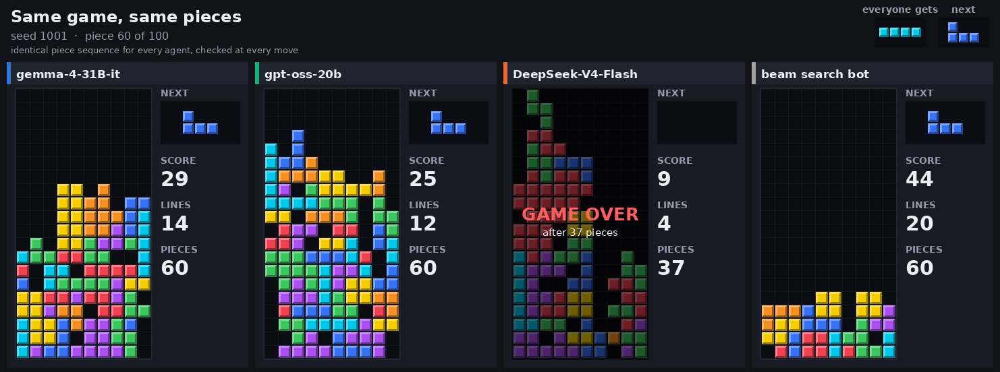
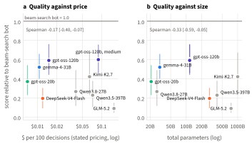
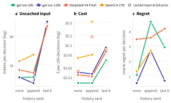
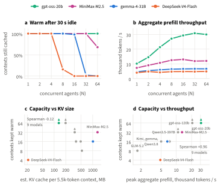
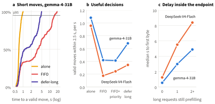
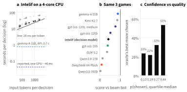
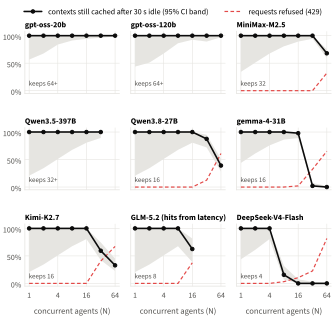

Abstract
Agents meet models as served: through an endpoint with a price card, a shared cache and other tenants, or through whatever hardware a self-hosted model runs on. Benchmarks rank the weights. We measure what agents get from models as served, using Tetris as an exact instrument: every move is scored against an oracle and every agent sees the same pieces. In five preregistered experiments with about 20,000 calls to nine open-weight models on one serverless provider, plus an open decision model self-hosted on a CPU, we find that price and size do not predict decision quality (rank correlation of score with price −0.17, with total parameters −0.33); that resending history is nearly free when the cache absorbs it but would cost eleven to twelve times more on two models if cached input were billed, and plays far worse; that deployments keep between 4 and more than 64 concurrent agent contexts warm, a capacity that tracks their throughput (ρ = 0.96) and not the model’s KV-cache size (ρ = −0.12); that an agent’s own long requests raise the tail latency of its short decisions more than tenfold, which a simple admission rule cuts by 59% without hurting play (confirmed on held-out data for gemma-4-31B); and that an open decision model plays mid-pack among the language models, always legally, but takes about 27 s per move on a 4-core CPU, some 650 times longer than its authors report on a GPU with the same weights. Architecture predicts some of what an agent sees, such as prefill time and partial cache hits on hybrid models, but much of it is set by the deployment. Agent evaluations should report the serving context they were measured in; we release the harness and every raw log.

An agent built on a language model rarely runs the model itself. It calls an endpoint, and behind the endpoint sit an inference engine, a cache, a scheduler and a price list, all shared with other tenants. The agent adds its own habits: how much history it resends, how many requests it keeps in flight, and whether long and short requests share a queue. What the agent receives, a decision of some quality at some latency and price, comes from all of these together.
Evaluations mostly rank the weights. Agent and game benchmarks report task quality through an API and treat serving as fixed; serving systems are evaluated on servers their authors control, with quality held constant. For open-weight models the gap is sharpest: one checkpoint can be served by many providers, quantized, cached and priced differently. A newer kind of model widens it. Decision models such as TypeSafe’s Jev and the open Intelif do not generate text; they score a caller’s options in one forward pass (Crabtree, 2026; Krishnan, 2026). Their appeal is speed, and speed is a property of where a model runs.
We measure what agents get from models as served, from the only place an agent stands: the client side. Tetris is the instrument (Algorta and Şimşek, 2017). Every move can be scored against an oracle, every game replays exactly, and every agent can be given the same pieces. We made about 20,000 calls to nine open-weight models on one serverless provider, Tensormesh, and self-hosted Intelif on a 4-core CPU.
Our contributions are (i) a measurement design that separates what an agent controls, observes and cannot see (Section 2); (ii) five preregistered experiments (about 20,000 API calls and every decision of a self-hosted model) linking deployment properties to cost, latency and decision quality, read against each model’s published architecture (Sections 4–6); and (iii) an open, replayable harness with raw logs of every call.
Figure 2 lists the layers between a Tetris agent and the weights, what our agent varies at each layer, what it can observe, and what stays hidden. For the served models we vary only the top two layers and the choice of model. Everything we say about the engine is inferred from timing and reported token counts, so we state it as a hypothesis consistent with the data, not as a measurement.
Serving systems. Continuous batching (Yu et al., 2022), paged KV memory in vLLM (Kwon et al., 2023), chunked prefill (Agrawal et al., 2024) and prefill/decode disaggregation (Zhong et al., 2024; Patel et al., 2024) make engines fast; KV reuse across requests is handled by RadixAttention (Zheng et al., 2024), multi-turn caching (Gao et al., 2024), KV-centric designs (Qin et al., 2025) and cache layers such as LMCache (Liu et al., 2025). Agent-aware engines schedule whole programs (Luo et al., 2025). This work assumes control of the server; we ask what of it reaches a tenant. Client-side scheduling for black-box APIs has been studied in simulation (Yuan et al., 2026); we test its simplest form on a live endpoint, using open-loop load (Schroeder et al., 2006) and tail metrics (Dean and Barroso, 2013).
| Layer | What the agent varies (experiment) | What it observes | What stays hidden |
|---|---|---|---|
| 🎮Task: Tetris | nothing: every agent gets the same seeded pieces | board, current and next piece, legal placements; oracle regret per move | nothing (fully observed) |
| 🧭Agent harness | model E1, history sent E2, concurrent agents E3, request mix and admission E4 | its own queue and timing | nothing (we wrote it) |
| 🌐Serverless API | output limits, JSON schema, priority hints E4 | latency, reported prompt, cached and output tokens, refusals (HTTP 429), the public price card | billing (the API key cannot read it), routing, replica count, other tenants |
| ⚙️Inference engine | nothing | only indirectly: cache hits, prefill throughput | batching, scheduler, KV memory pool, eviction and offloading |
| 🧠Weights | which served model id E1–E4 | model card and config: parameters, attention and KV design | the exact checkpoint and quantization behind an id |
| 🎯Self-hosted decision model | hardware, precision, threads E5 | everything: probability of every option, exact compute time | nothing; Jev itself is API-only and not tested |
Benchmarks and audits. AgentBench (Liu et al., 2024b), BALROG (Paglieri et al., 2025) and lmgame-Bench (Hu et al., 2026), which includes Tetris, score decisions through an API; HELM (Liang et al., 2023) adds efficiency metrics, and MLPerf Inference (Reddi et al., 2020) measures serving stacks at fixed accuracy. Audits show deployments differ: prompt caches shared across users (Gu et al., 2025), undetectable model substitution (Cai et al., 2025), and vendor differences for one open model (MoonshotAI, K2-Vendor-Verifier). We measure what such differences cost an agent.
Decision models. TypeSafe calls models that return calibrated probabilities over a caller’s options, rather than text, “System One” models. Its Jev is hosted only, in early access behind a waitlist, and is described by its makers as “neither small nor an LLM”, with end-to-end responses of 70–500 ms (Almeida, 2026; Crabtree, 2026); TypeSafe does not publish results on public benchmarks. Intelif is an open alternative that accepts the same request format: Qwen3-4B (Yang et al., 2025a) with a LoRA adapter (Hu et al., 2021) and a linear scorer that reads one anchor token per option, so a single forward pass scores every option (Krishnan, 2026). Its authors report 31.77 on the third-party Decision Index (apolinario, 2026) at a median of 16.5 ms on one RTX PRO 6000 GPU, and about 40 ms per Tetris move. We could not access Jev, so we test Intelif, and we test it where an agent without a GPU would run it.
The provider serves nine open-weight models (Table 1). If the weights alone decided what an agent experiences, two published quantities should matter most. The first is the KV cache one agent context occupies, which bounds how many contexts a given memory can keep; across these models it differs by a factor of 64. The second is the number of active parameters, which sets the compute to read a prompt, about two FLOPs per active parameter per token plus attention; it differs by a factor of 11.
Table 1: The ten models. Parameters and attention design are from each model’s report, card or config. KV/ctx is our estimate of the 16-bit KV cache (plus fixed recurrent state for Gated DeltaNet layers) that one 5.5k-token agent context (as in E3) needs, computed from the published config; real engines may store less (e.g., FP8). Prices are the provider’s list prices per million input and output tokens; the provider states that cached input is free on every model. aActive parameters from the MiniMax-M2 card (same architecture). bNot on the price page; the page lists the previous version (Qwen3.6-27B, Kimi K2.6, GLM-5.1) at these prices.
| Model | Total / active | Attention and KV design | KV/ctx | $/M in, out | Source |
|---|---|---|---|---|---|
| gpt-oss-20b | 21B / 3.6B | alternating full and 128-token window; GQA, 8 KV heads | 132 MB | 0.07, 0.28 | OpenAI (2025) |
| gpt-oss-120b | 117B / 5.1B | same pattern, 36 layers | 198 MB | 0.15, 0.60 | OpenAI (2025) |
| gemma-4-31B-it | 31B dense | 5 sliding (1024) : 1 global; keys reused as values in global layers | 1,015 MB | 0.14, 0.56 | Gemma Team (2026) |
| DeepSeek-V4-Flash | 284B / 13B | compressed sparse (4×) and heavily compressed (128×) attention, shared-KV, FP8 cache | 21 MB | 0.14, 0.28 | DeepSeek-AI (2026) |
| MiniMax-M2.5 | 229B / 10Ba | full attention in all 62 layers; GQA, 8 KV heads | 1,335 MB | 0.30, 1.20 | MiniMax (2025) |
| Qwen3.5-397B-A17B-FP8 | 397B / 17B | 3 Gated DeltaNet : 1 full attention, 60 layers | 342 MB | 0.60, 3.60 | Qwen Team (2026) |
| Qwen3.8-27B-FP8 | 27B dense | 3 Gated DeltaNet : 1 full attention, 64 layers | 489 MB | 0.32, 3.20b | model card |
| Kimi-K2.7-Code | 1T / 32B | multi-head latent attention (latent 512 + 64); INT4 experts | 370 MB | 0.96, 4.00b | Kimi Team (2025) |
| GLM-5.2 (NVFP4) | 744B / 40B | latent attention + DeepSeek sparse attention, shared indexer | 525 MB | 1.40, 4.40b | GLM-5-Team (2026) |
| Intelif (self-hosted) | 4.0B dense | Qwen3-4B, full attention, GQA 8 KV heads; LoRA + scorer | 775 MB | n/a | Krishnan (2026) |
The models shrink the KV cache in different ways. Grouped-query attention shares key–value heads across query heads (Ainslie et al., 2023); sliding-window layers keep only the last 128 (gpt-oss) or 1,024 (gemma) tokens; latent attention stores one compressed vector per token, which cut the KV cache by 93% in DeepSeek-V2 (DeepSeek-AI, 2024); DeepSeek-V4 compresses further and keeps an FP8 cache. Sparse attention reduces attention compute rather than memory, although its indexer still scales quadratically (DeepSeek-AI, 2025; Bai et al., 2026). The Qwen models replace three of every four attention layers with Gated DeltaNet (Yang et al., 2025b), a recurrent layer with a fixed-size state. Such hybrids are harder to prefix-cache: vLLM stores their state only at block boundaries, a mode it marks experimental (vLLM Team at IBM, 2025). MiniMax kept full attention in every layer, citing high cache-hit rates in real conversations as one reason (MiniMax, 2025). These designs give three predictions an agent can check from outside: if memory per context limited caching, capacity should fall as KV per context grows (P1); cold prefill time should grow with active parameters (P2); and the hybrid models should report only part of a repeated prefix as cached (P3).
Task. The board is 10×20 with one piece of preview, and pieces are drawn uniformly at random from a generator seeded per game. The piece sequence depends only on the seed, never on how much an agent simulates, so all agents face identical games. Games stop at 100 pieces or when the stack tops out.
Language-model agents (E1–E4). Each move, the agent receives the board, the current and next piece, and the legal placements, each annotated with its simulated outcome (lines cleared, new holes, height and surface change). It answers with a JSON object naming one placement; in E1 and E2 the output is constrained to legal placements by a JSON schema. gpt-oss models run at low reasoning effort (gpt-oss-120b also at medium, as a separate arm); gemma, Qwen, GLM and Kimi have thinking switched off through their chat template, and DeepSeek-V4-Flash answers directly by default. MiniMax-M2.5 cannot disable reasoning and exceeded 2,048 reasoning tokens on every move in a smoke test, so it appears only in E3.
Decision-model agent (E5). Intelif receives the same board and pieces; each legal placement is one option, described by the same simulated outcome, following Intelif’s own Tetris example. It plays the most probable option. It runs on the container we used for everything else: a 4-core Intel Xeon at 2.8 GHz with AVX-512 and no GPU. We keep the released bf16 weights but compute in fp32, which on three test positions picked the same moves as bf16 with probabilities within 0.003, three times faster; dynamic int8 was seven times faster but changed the first move, so we did not use it.
Outcomes. Quality is the game score relative to a beam-search bot on the same seeds, (score − random) / (beam − random), and the per-move regret against an approximate oracle that scores every legal placement by rollouts and a narrow beam search with common random numbers. Latency is wall time per decision measured by the client. Cost is estimated from the list price and the token counts the API reports. The provider states that cached input is free on every model, but four model cards show no cached price and the billing API is not readable with an inference key, so we report cost under the stated policy and, where it matters, an upper bound that bills cached input at the full input price.
Capacity probe (E3). N agents each send a unique context of about 5.5k tokens (a random nonce in the system prompt followed by eight turns of a Tetris game) with a one-token output, stay idle for 30 s, then send the same context plus one turn. An agent counts as warm when the second request reports at least half of the first one’s prompt as cached and both requests succeeded. GLM-5.2 reports no cached tokens, so its hits are inferred from latency (second request faster than 0.35 of its cold median); this rule agrees with reported hits on 92% of agents on the models that report them. N runs from 1 to 64 in randomized order, with one to five repetitions per model depending on price. Aggregate prefill throughput is N × the context length divided by the slowest first request of the round.
Design and statistics. Hypotheses, metrics and decision rules for every experiment were written down before its data (Appendix A lists deviations). Games are the independent unit: intervals for scores and paired differences come from 2,000 bootstrap resamples of seeds, and rank correlations are bootstrapped the same way. Hit rates carry Wilson 95% intervals. E4 uses the two-level paired bootstrap (time blocks, then requests) of its pilot. To keep our own traffic from contaminating cache and latency measurements, E3 ran alone, E1 and E2 ran together, and E4 ran alone; E5 sends no API traffic. Every call is logged raw (timestamps, status, reported tokens, response text and, for E5, the probability of every option), and every figure is regenerated from these logs.
Figure 3 places nine configurations by what they cost and how well they play, over ten new seeds and 6,403 decisions. The best play came from gpt-oss-120b, which reached 0.59 of the beam-search bot’s score at low reasoning effort for $0.015 per 100 decisions and 1.5 s per move; medium effort reached 0.60 at six times the price and eight times the latency (11.9 s per move). gemma-4-31B followed at 0.52 for $0.011 and 0.67 s. The most expensive model, GLM-5.2 at $0.156 per 100 decisions, played worst (0.09), and the largest, Qwen3.5-397B, reached 0.23. Across the nine configurations the rank correlation between score and price was −0.17 (95% bootstrap interval over seeds −0.40 to −0.07), with total parameters −0.33 (−0.59 to −0.05) and with active parameters −0.41 (−0.63 to −0.23). Our preregistered criterion, that neither price nor size shows a positive association, is met. Per-move oracle regret orders the configurations almost identically, from 0.49 for gpt-oss-120b to 2.9 for GLM-5.2. Apart from gpt-oss-120b (1.5 s at low effort, 11.9 s at medium) and GLM-5.2 (1.1 s), every configuration answered in a median of 0.6–0.7 s per move. With ten seeds, the three-seed pilot’s ordering moved substantially (gemma 0.88 → 0.52, Kimi 0.85 → 0.42, GLM 0.35 → 0.09, medium reasoning 0.76 → 0.60), a reminder that few-seed game benchmarks rank noisily.

Agents carry memory by resending history. We compared three policies on four models: no history, appending every turn, and keeping the last eight turns. Appending lets the cache do its job: the prompt grows past 10k tokens, yet 90–97% of it is served from cache, so the tokens actually processed per move stay at 500–740 on three models, about the same as with no history at all (620–830; Figure 4a). The eight-turn window is the expensive choice: dropping the oldest turn rewrites the prefix right after the system prompt, so every move re-processes 4.4k–5.2k tokens, 5.7 to 10 times as many as appending (paired over seeds; 95% intervals within about 10%). Qwen3.8 shows the hybrid cost from Section 6.3 in a real game: appending leaves about 1,475 tokens per move uncached, twice the other models, and its 1.15k-token stateless prompt is never cached at all, because it is shorter than one cache block.

Who pays for the cache decides whether appending is cheap. Under the provider’s stated policy, appending costs 0.89 to 1.27 times as much as no history on every model. If cached input were billed at the full price, as two of the four model cards would literally suggest, appending would cost 11 times as much on DeepSeek-V4-Flash (95% CI 9.5–12.6) and 12 times on Qwen3.8 (8.9–15.2), while staying at 0.9–1.0 on the gpt-oss models. An agent’s cheapest memory policy therefore hinges on a line of the price card that model comparisons rarely mention. Quality points the other way. The board is fully visible, so history adds no information, and appending lowered every model’s score relative to the beam-search bot: gpt-oss-20b from 0.40 to 0.03, gpt-oss-120b from 0.60 to 0.24, Qwen3.8 from 0.39 to 0.13 and DeepSeek from 0.20 to 0.11. Per-move oracle regret rose by 3.6 on gpt-oss-20b (95% CI 2.9 to 4.3, paired over seven seeds) and by 2.2 on gpt-oss-120b (1.9 to 2.7); on Qwen3.8 (+1.6, −0.5 to 3.5) and DeepSeek, which already played poorly without history (+0.03, −1.1 to 1.4), the change was not distinguishable from zero (Figure 4c). The memory that is cheapest to serve is the one that plays worst, consistent with earlier evidence that long, repetitive context degrades use of the relevant part (Liu et al., 2024a).
Every deployment cached a repeated 5.5k-token context when one agent used it. How many agents it could serve that way differed by more than an order of magnitude (Figure 5a; all nine models in Appendix B). gpt-oss-20b and gpt-oss-120b kept all 64 concurrent contexts warm after 30 s of idleness, the most we tested. MiniMax-M2.5 kept 32 and Qwen3.5-397B all 32 it was tested with; gemma-4-31B, Qwen3.8-27B and Kimi-K2.7 kept 16; GLM-5.2 kept 8; DeepSeek-V4-Flash kept 4. Beyond capacity the loss is abrupt: gemma kept 98% of 16 contexts but 2% of 32, and a context that had been evicted took 12 to 19 times longer to serve again (2.3 s instead of 0.19 s on gemma; 6.3 s instead of 0.33 s on DeepSeek). Past capacity most deployments also began refusing requests: at 32 or 64 agents, 62% of DeepSeek’s agents and 54% of gemma’s had a request refused with HTTP 429 (“Server is overloaded”), while the gpt-oss deployments refused none.

The architecture does not explain the ranking (P1). The model with the smallest KV cache per context, DeepSeek-V4-Flash at an estimated 21 MB, keeps the fewest contexts, and the one with the largest, MiniMax-M2.5 at 1.4 GB, keeps 32; across the nine models the rank correlation between capacity and KV size is −0.12 (Figure 5c). What capacity does track is how much prefill work a deployment can do at once (Figure 5d, Spearman +0.96). gpt-oss-20b’s aggregate throughput grew from 10k to 31k tokens per second as agents were added, a sign of many parallel replicas, while DeepSeek stayed near 4.8k and gemma near 6.6k, as if requests were processed by a single replica in turn. Measured in tokens, DeepSeek’s capacity also matches our pilot two days earlier with 15k-token contexts: it kept one context but not four then (between 15k and 60k tokens), and four 5.5k contexts but not eight now (between 22k and 44k). Even 44k tokens of DeepSeek’s compact cache is about 150 MB by our estimate, far below the KV memory of one GPU, so the limit is a property of how much cache and hardware the deployment allots, or of how many other tenants share it, not of the model. Two architectural predictions do hold. Cold prefill took longer on models with more active parameters (P2; Spearman +0.82 across the nine models), from 0.54 s on gpt-oss-20b to 1.5 s on Kimi and 3.6 s on GLM-5.2. And the two Gated DeltaNet hybrids reported only part of a repeated prefix as cached (P3): Qwen3.5 always 5,280 of 5,684 tokens (93%) and Qwen3.8 always 4,704 (83%), exactly the prompt rounded down to a multiple of a large block, as block-aligned caching of the recurrent state predicts. The other models cache all but at most the last 140 tokens. A Qwen3.8 agent therefore re-pays up to about 1.5k tokens of prefill on every turn.
Agents mix traffic: short per-move decisions and, now and then, long requests that summarize or plan over a large context. We replayed the same frozen requests, at the same arrival times, under four client policies: short requests alone, everything in one first-in-first-out queue, the same queue with vLLM-style priority hints, and defer-long, which sends a long request only when no short one is waiting or in flight, keeps at most one long request outstanding, and stops deferring after 6 s. This confirmatory run used a held-out corpus that the pilot never touched, ten time blocks per model, and the pilot’s hypotheses and margins unchanged.

Mixing in long requests raised the 95th-percentile time to a valid move from 0.95 s to 11.0 s on gemma-4-31B (+1,052%, 95% CI +689% to +1,386%) and from 1.8 s to 22.4 s on DeepSeek-V4-Flash (+1,123%, CI +372% to unbounded), confirming H1 on both. Most of the delay arises inside the endpoint, not in our queue: a short request’s median time to first byte grew from 0.5 s to 2.5 s with one long request still in prefill and to 6.2 s with two on gemma (0.7, 5.3 and 9.1 s on DeepSeek), while a plain network probe moved by less than 0.2 s (Figure 6c). Priority hints, which the endpoint accepts, changed nothing measurable (gemma −2%, CI −16% to +5%). Defer-long cut gemma’s tail by 59% (CI 45% to 66%) and raised the rate of useful decisions by 24% at the same cost, and this time it passed every preregistered non-inferiority check, including the per-move regret margin the pilot missed: H2 is supported on gemma. On DeepSeek, defer-long cut the tail by 46% and raised useful decisions by 23%, but about 4% of its short decisions never produced a valid move under mixed load, so the tail interval is unbounded and H2 remains inconclusive. Defer-long cannot help short requests that arrive while a long one is already in prefill, and it makes long requests wait longer.
Intelif answered every move with a legal placement and a probability for each option, so no output had to be parsed, retried or replaced. Over three games and 239 moves it reached 0.41 of the beam-search bot’s score, fifth of the ten agents that played these seeds, between gpt-oss-120b at low effort (0.51) and gpt-oss-20b (0.38) (Figure 7b), although Tetris is not among its training tasks. Its per-move regret, 1.28, fell between the stronger language models (0.38–0.85) and the weaker ones (2.1–3.7). Its speed is where serving matters most. On the container’s four CPU cores each move took a median of 26.5 s, re-timed on 30 positions with nothing else running (31 s during play, when other jobs shared the cores), growing linearly with the prompt at about 28 ms per input token; a 9-option position took 12.5 s and a 34-option position 33 s. Its authors report about 40 ms per Tetris move and a median of 16.5 ms on their benchmark, both on one RTX PRO 6000 GPU, roughly 650 times faster than our CPU with the same weights. For comparison, the language models above answered in a median of 0.6–0.7 s through the serverless API (Figure 7a). Its probabilities carry information at the top end: on the quarter of moves where it gave its choice more than 0.34, regret was 0.30 and it picked the oracle’s best move 53% of the time, against regret of 1.1–2.6 and 22–32% best moves in the other quarters (Figure 7c), so an agent could use them to decide when to fall back to search or a larger model.

What the weights predict, and what they do not. Published architecture predicted two things an agent can see from outside: how long a cold prompt takes (active parameters) and how much of a repeated prompt a hybrid model can reuse (block-aligned caching of recurrent state). It did not predict the outcome that matters most for an agent fleet, how many agents a deployment keeps warm, which followed the hardware behind the deployment rather than the compactness of the model’s KV cache. Neither did price or size predict how well a model played: the most expensive model played worst, and gpt-oss-120b at low reasoning effort matched its own medium-effort play at a sixth of the price. A leaderboard row reports none of these.
What to report. An evaluation of an agent on a served model should state the provider and model identifier, the date, the full price card including cached input and how it was applied, the cache behavior the API reports (granularity and hit rate at the agent’s concurrency), refusals under load, the agent’s memory and admission policy, and, for self-hosted models, the hardware and numeric precision. Each of the factors we varied or measured changed an outcome here by a factor of two or more. The cost of measuring them is small: the four API experiments cost $9.27 under the provider’s stated pricing ($13.55 at the full-price upper bound), and every figure regenerates from the raw logs.
Decision models. A decision model removes generation, parsing and invalid outputs from the loop: Intelif always returned a legal move with a probability for every option. Its probabilities were informative, which an agent can use to decide when to fall back to search or to a larger model. Its main selling point, speed, is a property of the hardware it runs on: on the CPU an agent without a GPU would use, it was about 40 times slower than calling a far larger language model through a serverless API, and about 650 times slower than on its authors’ GPU. A decision model is fast only as served, so comparisons with language models should state where each one ran.
All API measurements come from one provider over two days, on a shared platform whose other traffic we cannot see; they describe these deployments at that time, not the models in general. Model identifiers do not prove which checkpoint or quantization was served. Capacity is measured with one context length, one idle gap and one to five repetitions per model, and refusals at high load also reduce the number of contexts that reached the cache. Costs are estimates from list prices and reported token counts; the billing record is not readable with an inference key. The oracle is approximate. Tetris has a fully visible state, which is likely why history did not help here; tasks with hidden state may reward memory. The decision model was tested on one CPU, on three games, with the prompt format of its own Tetris example; a GPU, other prompts, or Jev itself could behave differently. Appendix A lists every deviation from the written plans, including excluded rounds, a dropped arm and the reduced scope of E5.
For an agent, the product is not the weights but the model as served: behind a price card and a cache, next to other tenants, on whatever hardware runs it, and driven by the agent’s own habits. Measured from the client side with Tetris as an exact instrument, these factors changed what the agent paid by up to an order of magnitude, its tail latency by more than an order of magnitude, how many agents could share a deployment by a factor of sixteen, and, for a decision model, its speed by roughly 650 times, while price and size did not predict how well it played. The published architecture explained some of this, and the deployment the rest. We hope evaluations of open-weight and decision models will report the serving context alongside the score.
Table A1: The five experiments. Calls are model calls, including failures (E3: mostly HTTP 429 refusals at high load). Cost is estimated from list prices and reported tokens, under the provider’s stated pricing (cached input free) and under the full-price bound that our budget guard used; the guard’s ledger also reserves cost for failed calls. The program’s total, including pilots on 2–3 October, stayed within $20 by the guard’s accounting.
| Experiment | Design | Calls | $ stated | $ bound |
|---|---|---|---|---|
| E1 model ladder | 9 configurations × 10 seeds × ≤100 pieces; stateless, annotated, schema-constrained | 6,403 | 3.02 | 3.04 |
| E2 history policy | 4 models × 3 policies (Qwen3.8: 2) × 9 seeds; 73 of 99 games finished | 4,168 | 1.31 | 3.62 |
| E3 cache capacity | 9 models × N ∈ {1, …, 64} × 1–5 repetitions; three parts | 5,542 | 3.63 | 5.58 |
| E4 interference | 2 models × 10 time blocks × 4 conditions; held-out corpus | 3,630 | 1.31 | 1.31 |
| E5 decision model | Intelif on a 4-core CPU, 3 games (seeds 1000–1002) | 239 | 0 | 0 |
Deviations from the written plans. All are recorded with timestamps in notes/scaleup_plan.md. (i) E3 part 1 was stopped after rounds with 32 or more agents of different models overlapped and drew gateway-wide refusals; part 2 never overlapped such rounds, and 17 part-1 rounds in flight during an overlap are excluded. Part 2 stopped at its budget cap and part 3 ran the five remaining rounds. (ii) E2 dropped one arm (Qwen3.8, last eight turns) before any data to save budget, then reached its cap: 26 of 99 games did not finish and are excluded. (iii) Score relative to the beam-search bot is pooled over seeds rather than averaged per seed, decided after one E2 seed on which the bot itself scored 10 points made per-seed ratios explode, and before E1 and E5 were analyzed. (iv) E4 ran 10 blocks per model instead of 13, set by a rule fixed before it ran (the largest number whose estimated cost fit the remaining budget). (v) E5 was reduced to three games for lack of CPU time, and its process was once killed by the container’s memory limit; the interrupted game was replayed from the start. (vi) The E1 and E2 oracle was computed after the API phase, with identical settings.

Request. Each move is one Choice question in the request format Intelif shares with Jev’s /v1/systemone endpoint. The state holds the board as 20 rows of # and ., the current piece and the next piece. Each legal placement is one option, keyed by rotation and column and described by its simulated outcome, following Intelif’s own Tetris example: for instance, “rotation 0, column 3: clears no lines, no new holes, raises the stack by 2, surface gets bumpier”. The instruction reads “You are playing Tetris. Where should the T piece land? Clear lines, avoid holes and keep the stack low and flat.” Positions had 5 to 34 options and 290 to 1,220 input tokens. The language-model agents received the same facts as numbers (lines cleared, resulting height and holes per placement), so Section 6.5 compares agents as each is meant to be used, not the two kinds of model under identical inputs.
Precision and determinism. The container’s CPU (Intel Xeon, 2.8 GHz, AVX-512 with int8 dot products, no native bf16) runs the released bf16 weights slowly. Keeping the bf16 weights and computing in fp32 reproduced the bf16 choices on three test positions (probabilities within 0.003) at a third of the time. Dynamic int8 quantization was seven times faster but chose a different first move and spread probability over more options, so we did not use it. Play is deterministic: after the process was killed by the container’s memory limit during game 2 (it holds 9–10 GB), the replayed game reproduced the first 22 moves with identical probabilities.
Every number and figure is regenerated from the committed raw logs (calls.jsonl, rows.jsonl, requests.jsonl and console logs in each run directory). Live experiments need a provider API key and stay within the budgets in Table A1; everything else runs offline on a CPU.
# E3: cache capacity (parts 2 and 3 resume part 1), then the pooled analysis
python -m llm.capacity_sweep --config configs/scaleup/capacity.yaml --out runs/explore/scaleup/capacity
python -m llm.capacity_analysis runs/explore/scaleup/capacity{,_part2,_part3} \
--out runs/explore/scaleup/capacity_analysis
# E1 and E2: games (API phase), oracle, analysis
python -m llm.run_pilot --config configs/scaleup/ladder.yaml --out_dir runs/explore/scaleup/ladder \
--skip_oracle
python -m llm.run_pilot --config configs/scaleup/memory.yaml --out_dir runs/explore/scaleup/memory \
--skip_oracle
python -m llm.add_oracle runs/explore/scaleup/ladder runs/explore/scaleup/memory --workers 4
python -m llm.scaleup_analysis ladder runs/explore/scaleup/ladder
python -m llm.scaleup_analysis memory runs/explore/scaleup/memory
# E4: interference, one process per model (likewise confirm_deepseek)
python -m llm.interference_pilot live --config configs/interference/confirm_gemma.yaml \
--out runs/explore/interference/confirm_gemma
python -m llm.interference_analysis runs/explore/interference/confirm_gemma
# E5: Intelif on CPU (Python 3.12 environment with intelif installed)
python -m llm.decision_model --seeds 1000,1001,1002 --dtype fp32compute --threads 3 \
--out runs/explore/scaleup/intelif
python -m llm.scaleup_analysis intelif runs/explore/scaleup/intelif_all
python -m llm.decision_latency runs/explore/scaleup/intelif_all --n 30 --threads 3
# figures, references and PDF
python paper/build.py